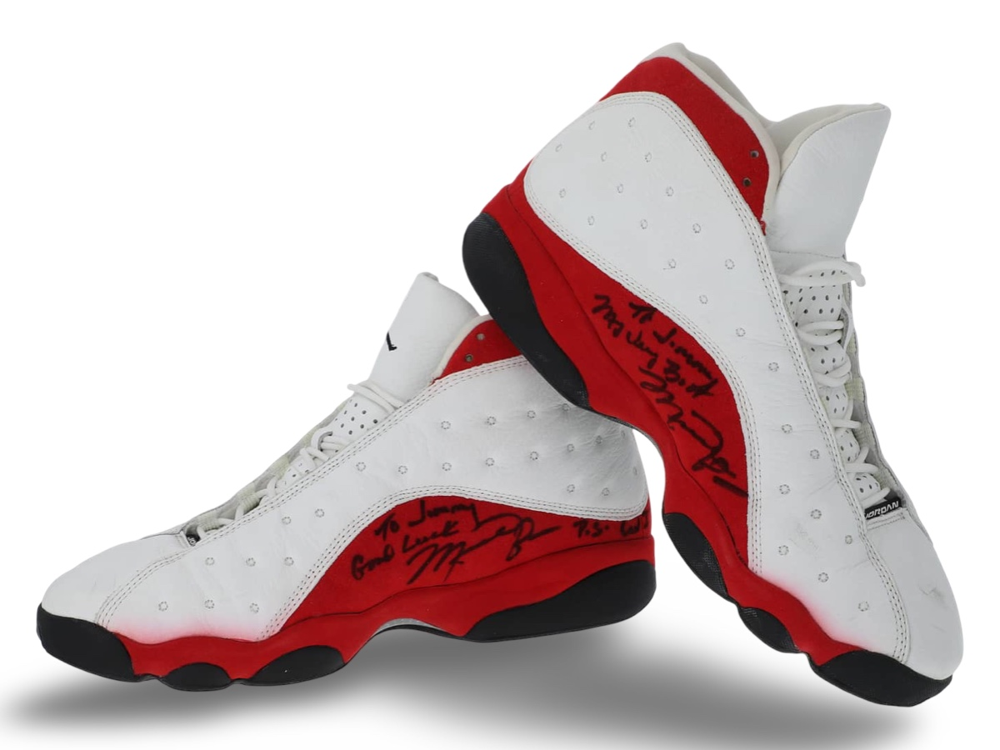
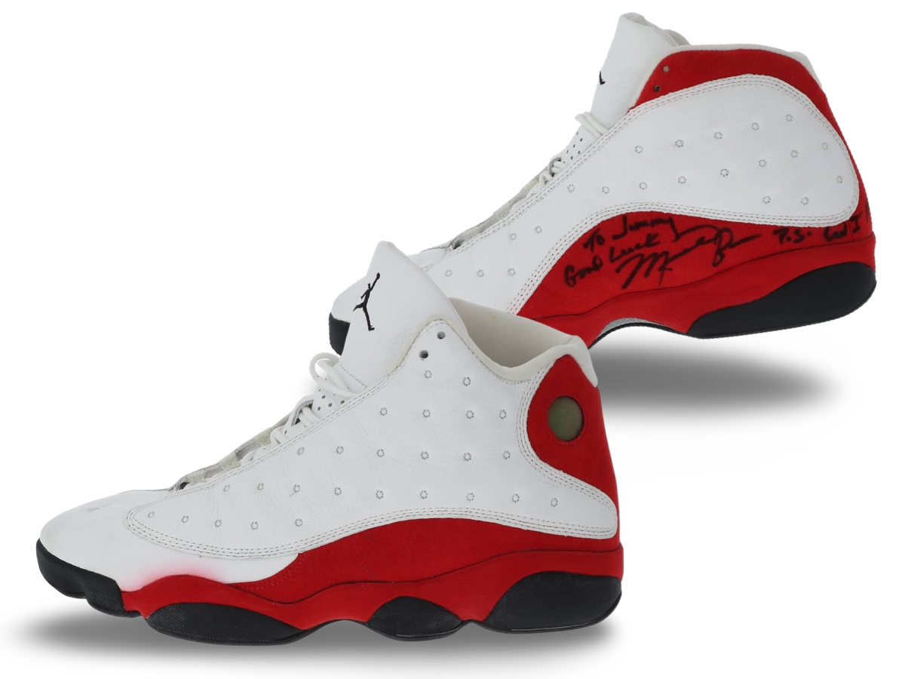
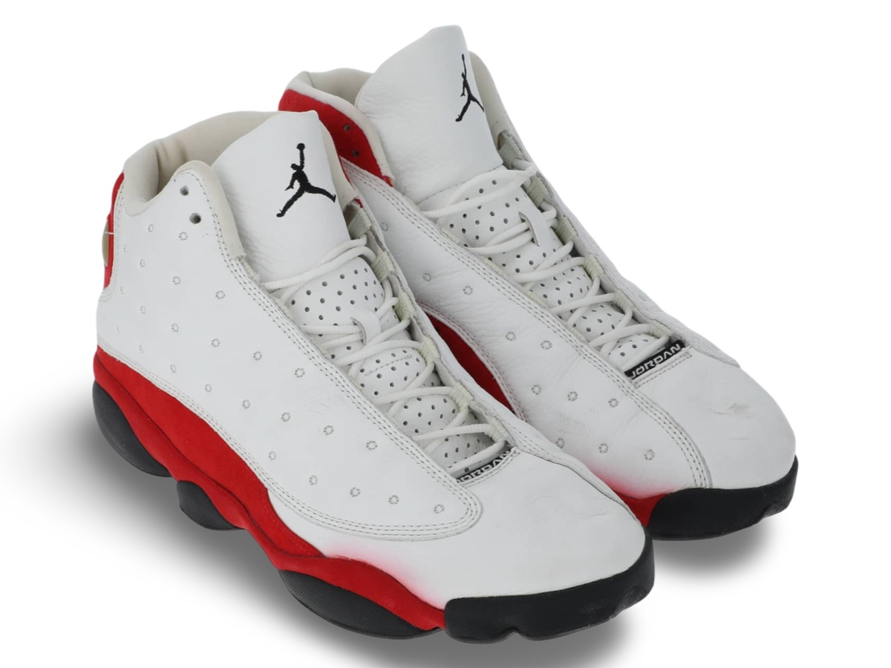

Air Jordan XIII worn by Michael Jordan.
A gift to long time referee Jimmy Butler, Jordan penned the
inscription "Give me Calls!"
Public Sale
- Auction House: Goldin Auctions
- Sale Date: November 23, 2024
- Lot #: 1
- Sale Price: $54,240
Photo Match Details
- Photo-Matched: Yes
- Games Photo-Matched: 1
- Photo-Matched By:SIA
Research & Provenance
- Provenance comes from Jimmy Butler, former NBA referee. Michael Jordan signed and inscribed the shoes personally to Jimmy after the Denver game.
- They have been in Butler's possession since that night and until this sale.